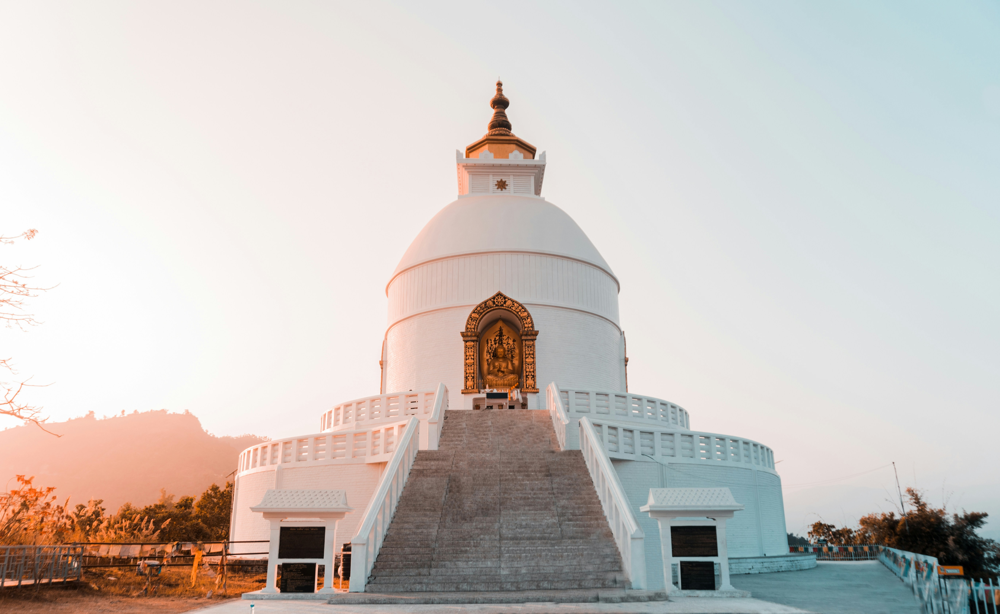
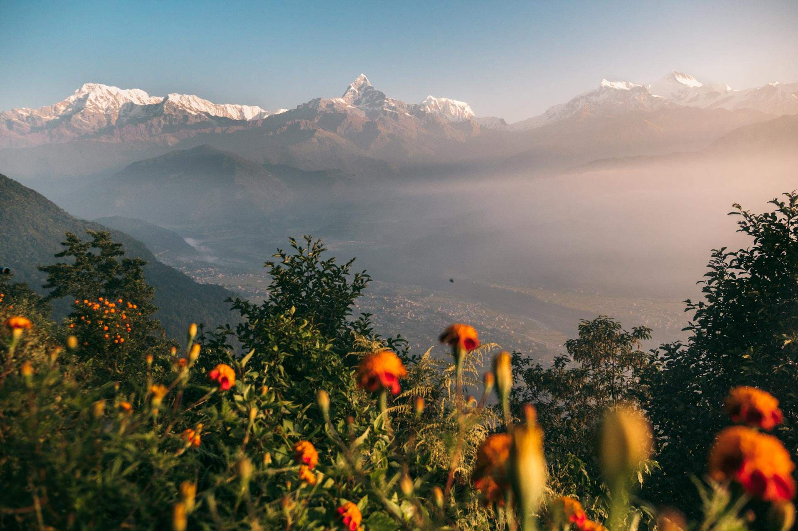
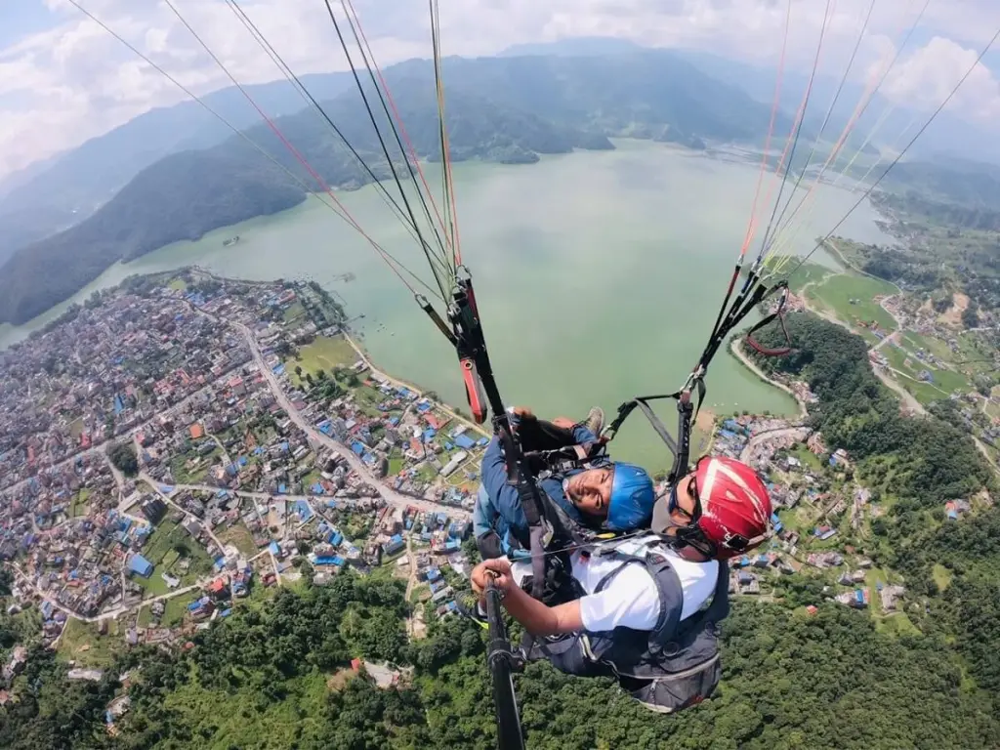
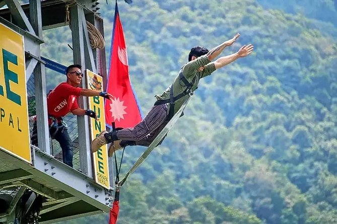
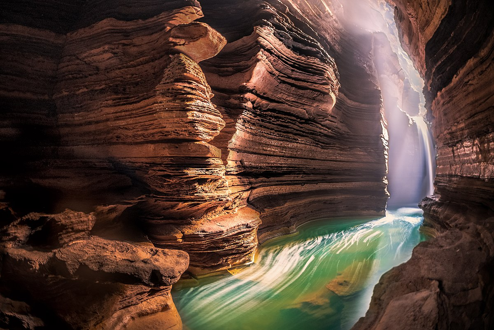
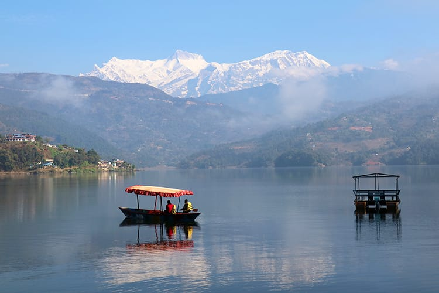
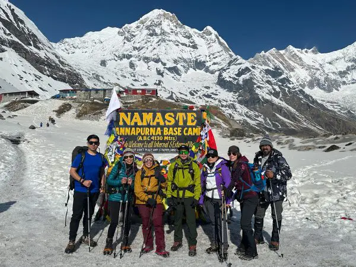
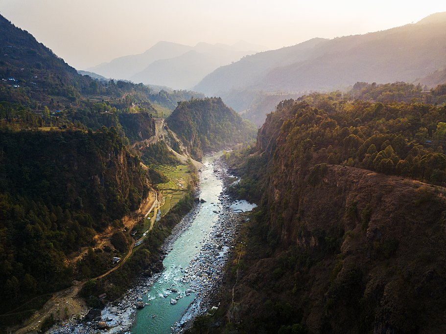
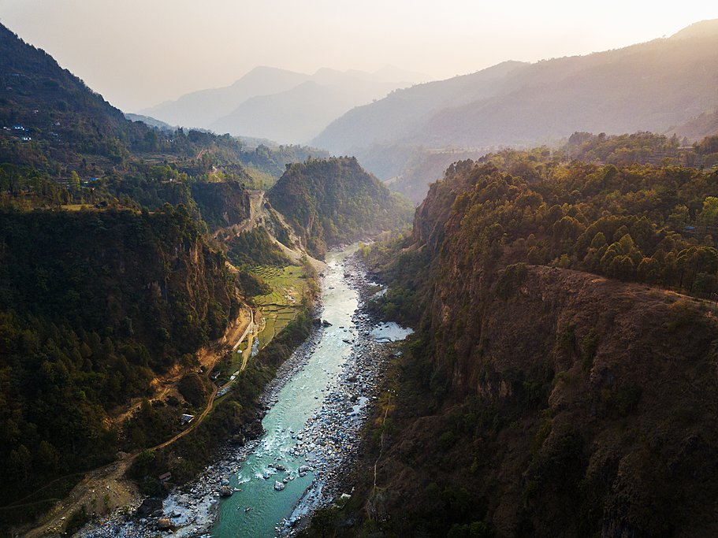

Top Attractions
Phewa Lake
Enjoy peaceful boating with mountain reflections.

World Peace Pagoda
Visit a stupa offering panoramic mountain views.
Sarangkot
Watch the sunrise over the Annapurna range.
Davis Falls
See a dramatic underground waterfall.

Paragliding
Fly over stunning landscapes for an unforgettable thrill.
Bungee Jumping
Experience a heart-pounding jump over nature's beauty.
Gupteshwor Cave
Explore the mystical cave near Davis Falls.
Begnas Lake
Relax by a quieter and equally beautiful lake.
Annapurna Base Camp
Trek to the heart of the Himalayas for awe-inspiring views.
 
